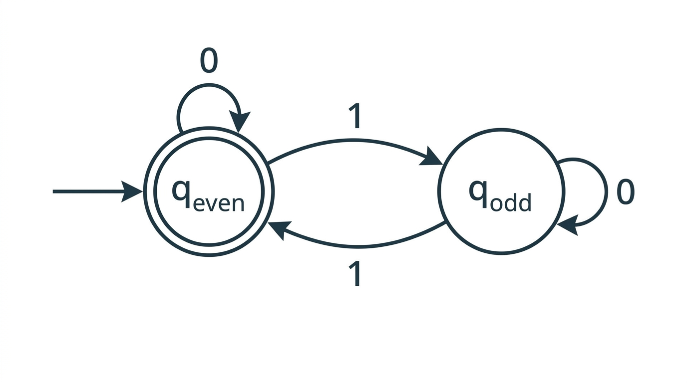

DFAs & Regular Languages — COMP0003 Automata¶
Lecture-style notes covering Automata Lectures 1–2. Automata theory studies abstract machines (DFAs, PDAs, Turing machines) and the classes of languages they recognise. We begin with the simplest model — the deterministic finite automaton (DFA) — and the regular languages it defines. Mastery of the formal 5-tuple, transition tracing, and closure proofs (complement, union via product construction) is essential for everything that follows.
1. COMPLETE TOPIC SUMMARY¶
What automata theory is about¶
Automata theory classifies computational models by the languages they can recognise:
| Machine | Language class |
|---|---|
| DFA / NFA | Regular languages |
| PDA (pushdown automaton) | Context-free languages |
| Turing machine | Recursively enumerable languages |
A central question throughout the module: given a language, what is the simplest machine that recognises it?
Data structures review¶
The formal definitions ahead rely on standard mathematical objects. A quick reference:
- Set. An unordered collection of distinct elements, e.g. \(\{a, b, c\}\). The empty set is \(\emptyset\).
- Tuple. An ordered, fixed-length sequence, e.g. \((q_0, a)\). A \(k\)-tuple has \(k\) components.
- Cartesian product. \(A \times B = \{(a, b) \mid a \in A,\; b \in B\}\). Generalises to \(A_1 \times \cdots \times A_k\).
- Power set. \(\mathcal{P}(A)\) is the set of all subsets of \(A\). If \(|A| = n\) then \(|\mathcal{P}(A)| = 2^n\).
- Function. A mapping \(f : A \to B\) assigns exactly one element of \(B\) to each element of \(A\). A total function is defined on every element of its domain.
- Alphabet. A finite, non-empty set of symbols, conventionally denoted \(\Sigma\).
- String. A finite sequence of symbols from \(\Sigma\). The empty string is denoted \(\varepsilon\) (length 0).
- Language. Any set of strings over \(\Sigma\) (may be finite or infinite). The set of all strings over \(\Sigma\) (including \(\varepsilon\)) is \(\Sigma^*\).
- Graph. A set of nodes (vertices) and edges (directed or undirected). DFAs are naturally drawn as directed graphs — states are nodes, transitions are labelled directed edges.
How a DFA works — intuition¶

{kind=link}
A DFA reads an input string one symbol at a time, left to right. It maintains a single current state. On reading a symbol, it follows the unique outgoing edge labelled with that symbol to a new state. After the last symbol, the DFA accepts if the current state is an accept state and rejects otherwise.
Key properties:
- Deterministic: exactly one transition per (state, symbol) pair — no choices.
- Finite: finitely many states, no auxiliary storage.
- No backtracking: reads each symbol once, never revisits.
Examples of DFAs¶
Example 1 — even number of 1s over \(\Sigma = \{0, 1\}\).
Two states: \(q_{\text{even}}\) (start, accept) and \(q_{\text{odd}}\). Reading a \(1\) toggles between them; reading a \(0\) stays put. The empty string \(\varepsilon\) is accepted (zero 1s is even).
Example 2 — the string is exactly "abb" over \(\Sigma = \{a, b\}\).
Four states tracing the progress through the characters \(a\), \(b\), \(b\), plus a trash state that absorbs any deviation. Only the state reached after reading exactly \(a\), \(b\), \(b\) (with no further input) is accepting.
Example 3 — contains "abac" over \(\Sigma = \{a, b, c\}\).
States track the longest prefix of "abac" matched so far (\(0, 1, 2, 3, 4\) characters matched). Once all four are matched, the machine stays in the accept state regardless of further input.
Example 4 — ends in "cc" or "cba" over \(\Sigma = \{a, b, c\}\).
States remember the relevant suffix of the input seen so far. Multiple accept states correspond to the two patterns.
Formal definition of a DFA¶
A deterministic finite automaton is a 5-tuple \(M = (Q,\; \Sigma,\; \delta,\; q_0,\; F)\) where:
- \(Q\) is a finite set of states.
- \(\Sigma\) is a finite alphabet.
- \(\delta : Q \times \Sigma \to Q\) is the transition function (total).
- \(q_0 \in Q\) is the start state.
- \(F \subseteq Q\) is the set of accept (final) states.
Important: \(\delta\) must be total — defined for every \((q, a) \in Q \times \Sigma\). If a diagram leaves a transition "undefined," a trash state (also called a sink or dead state) is implicitly present to absorb that input. The trash state has all transitions looping back to itself and is not an accept state.
Transition function as a table¶
For the "even number of 1s" DFA with \(Q = \{q_e, q_o\}\), \(\Sigma = \{0, 1\}\), \(q_0 = q_e\), \(F = \{q_e\}\):
| \(0\) | \(1\) | |
|---|---|---|
| \(q_e\) | \(q_e\) | \(q_o\) |
| \(q_o\) | \(q_o\) | \(q_e\) |
Every cell is filled — this is what makes \(\delta\) total.
Trash / sink states¶
When a DFA diagram omits an edge — say state \(q\) has no arrow for symbol \(a\) — the formal DFA includes a non-accepting trash state \(q_{\text{trap}}\) with:
This ensures \(\delta\) is total. In diagrams the trash state is often suppressed for clarity, but it must appear in any formal 5-tuple answer.
DFA acceptance — formal definition¶
A DFA \(M = (Q, \Sigma, \delta, q_0, F)\) accepts a string \(w = w_1 w_2 \cdots w_n\) (each \(w_i \in \Sigma\)) if and only if there exists a sequence of states \(r_0, r_1, \ldots, r_n \in Q\) such that:
- \(r_0 = q_0\) (start in the start state),
- \(r_{i+1} = \delta(r_i,\, w_{i+1})\) for \(i = 0, 1, \ldots, n-1\) (follow transitions), and
- \(r_n \in F\) (end in an accept state).
If \(w = \varepsilon\) (length 0), the sequence is just \(r_0 = q_0\); the DFA accepts \(\varepsilon\) iff \(q_0 \in F\).
Language of a DFA¶
The language recognised (or accepted) by a DFA \(M\) is:
\[L(M) = \{ w \in \Sigma^* \mid M \text{ accepts } w \}\]
\(L(M)\) may be finite (e.g. \(\{abb\}\)), infinite (e.g. all strings with an even number of 1s), or empty (\(\emptyset\), if no string leads to an accept state).
Set-builder notation is the standard way to describe languages:
The empty string¶
\(\varepsilon\) denotes the string of length zero. It belongs to \(\Sigma^*\) for every alphabet \(\Sigma\). Whether a DFA accepts \(\varepsilon\) depends solely on whether the start state is an accept state: \(\varepsilon \in L(M) \iff q_0 \in F\).
Regular languages¶
A language \(L\) is called regular if there exists some DFA \(M\) such that \(L(M) = L\).
Equivalently, the regular languages are exactly the class of languages recognisable by DFAs. Later we show that NFAs and regular expressions define the same class.
Closure properties of regular languages¶
"Closed under an operation" means: applying the operation to regular language(s) always yields a regular language.
Closure under complement¶
Theorem. If \(L\) is regular, then \(\overline{L} = \Sigma^* \setminus L\) is regular.
Proof. Let \(M = (Q, \Sigma, \delta, q_0, F)\) be a DFA recognising \(L\). Construct
\(N\) is identical to \(M\) except the accept and non-accept states are swapped. For any string \(w\), the state sequence in \(N\) is exactly the same as in \(M\) — only the acceptance criterion is inverted. Therefore \(L(N) = \overline{L}\), which is recognised by a DFA and hence regular. \(\blacksquare\)
Why \(\delta\) must be total: If \(\delta\) were partial (some transitions missing), a string that "gets stuck" would be rejected by \(M\). Flipping accept states would not correctly capture that string as accepted by \(N\), because \(N\) would also get stuck. Totality of \(\delta\) ensures every string reaches a definite state in both machines.
Closure under union (product construction)¶
Theorem. If \(L_1\) and \(L_2\) are regular, then \(L_1 \cup L_2\) is regular.
Proof. Let \(M_1 = (Q_1, \Sigma, \delta_1, q_1, F_1)\) and \(M_2 = (Q_2, \Sigma, \delta_2, q_2, F_2)\) be DFAs for \(L_1\) and \(L_2\) respectively (assume the same alphabet \(\Sigma\); if not, take \(\Sigma = \Sigma_1 \cup \Sigma_2\) and add trash-state transitions).
Construct the product DFA:
where:
- \(Q = Q_1 \times Q_2\) — each state is a pair \((q_i, q_j)\) tracking both machines simultaneously.
- \(q_0 = (q_1, q_2)\).
- \(\delta\big((r_1, r_2),\, a\big) = \big(\delta_1(r_1, a),\; \delta_2(r_2, a)\big)\) for every \((r_1, r_2) \in Q\) and \(a \in \Sigma\).
- \(F = \{(r_1, r_2) \in Q \mid r_1 \in F_1 \;\text{or}\; r_2 \in F_2\}\).
\(N\) simulates \(M_1\) and \(M_2\) in parallel. After reading \(w\), \(N\) is in state \((\delta_1^*(q_1, w),\; \delta_2^*(q_2, w))\) and accepts iff at least one component is accepting. Therefore \(L(N) = L_1 \cup L_2\). \(\blacksquare\)
Intersection. Changing the accept condition to \(F = \{(r_1, r_2) \mid r_1 \in F_1 \;\text{and}\; r_2 \in F_2\}\) gives \(L_1 \cap L_2\), proving closure under intersection by the same construction.
Size. The product DFA has \(|Q_1| \times |Q_2|\) states — potentially large but always finite.
Closure under concatenation — teaser¶
\(L_1 \circ L_2 = \{xy \mid x \in L_1,\; y \in L_2\}\) is also regular, but the proof requires nondeterministic finite automata (NFAs), covered in the next lecture. The difficulty is that a DFA cannot "guess" where to split the input between the \(L_1\) part and the \(L_2\) part.
2. EXAM-STYLE QUESTIONS (WITH MODEL ANSWERS)¶
Q1 — Formal 5-tuple from a DFA description¶
Question. A DFA over \(\Sigma = \{0, 1\}\) has states \(\{q_0, q_1, q_2\}\), start state \(q_0\), and accept state \(q_1\). The transitions are: \(\delta(q_0, 0) = q_0\), \(\delta(q_0, 1) = q_1\), \(\delta(q_1, 0) = q_2\), \(\delta(q_1, 1) = q_0\), \(\delta(q_2, 0) = q_1\), \(\delta(q_2, 1) = q_2\). Give the formal 5-tuple.
Model answer.
where \(\delta\) is defined by:
| \(0\) | \(1\) | |
|---|---|---|
| \(q_0\) | \(q_0\) | \(q_1\) |
| \(q_1\) | \(q_2\) | \(q_0\) |
| \(q_2\) | \(q_1\) | \(q_2\) |
All transitions are specified, so \(\delta\) is total. \(Q = \{q_0, q_1, q_2\}\), \(\Sigma = \{0, 1\}\), \(q_0\) is the start state, \(F = \{q_1\}\).
Q2 — Trace a DFA on an input string¶
Question. Using the DFA \(M\) from Q1, trace the computation on the input string \(w = 01101\). Does \(M\) accept or reject \(w\)?
Model answer. The state sequence \(r_0, r_1, \ldots, r_5\):
| Step | Symbol read | Current state | Transition |
|---|---|---|---|
| 0 | — | \(q_0\) | (start) |
| 1 | \(0\) | \(q_0\) | \(\delta(q_0, 0) = q_0\) |
| 2 | \(1\) | \(q_1\) | \(\delta(q_0, 1) = q_1\) |
| 3 | \(1\) | \(q_0\) | \(\delta(q_1, 1) = q_0\) |
| 4 | \(0\) | \(q_0\) | \(\delta(q_0, 0) = q_0\) |
| 5 | \(1\) | \(q_1\) | \(\delta(q_0, 1) = q_1\) |
Final state: \(r_5 = q_1 \in F = \{q_1\}\). \(M\) accepts \(w = 01101\).
Q3 — Construct a DFA for a given language¶
Question. Construct a DFA over \(\Sigma = \{a, b\}\) that recognises the language \(L = \{ w \in \{a, b\}^* \mid w \text{ contains the substring } ab \}\).
Model answer. Three states tracking progress toward seeing \(ab\):
- \(q_0\): have not yet seen any relevant prefix. (Start state.)
- \(q_1\): the most recent symbol was \(a\) (we are "ready" for a \(b\)).
- \(q_2\): we have seen \(ab\). (Accept state; stay here forever.)
Transition table:
| \(a\) | \(b\) | |
|---|---|---|
| \(q_0\) | \(q_1\) | \(q_0\) |
| \(q_1\) | \(q_1\) | \(q_2\) |
| \(q_2\) | \(q_2\) | \(q_2\) |
Formal 5-tuple: \(M = (\{q_0, q_1, q_2\},\; \{a, b\},\; \delta,\; q_0,\; \{q_2\})\).
Correctness argument. Before seeing \(ab\), the machine remembers whether the last symbol was \(a\) (state \(q_1\)) or not (\(q_0\)). Once \(b\) follows an \(a\), we move to the absorbing accept state \(q_2\). Any string containing \(ab\) eventually reaches \(q_2\); any string not containing \(ab\) never does.
Q4 — Prove complement closure formally¶
Question. Prove that the class of regular languages is closed under complement.
Model answer.
Let \(L\) be a regular language. Then there exists a DFA \(M = (Q, \Sigma, \delta, q_0, F)\) with \(L(M) = L\).
Define \(N = (Q, \Sigma, \delta, q_0, Q \setminus F)\).
\(N\) is a valid DFA: \(Q\) is finite, \(\Sigma\) is finite, \(\delta\) is the same total transition function, \(q_0 \in Q\), and \(Q \setminus F \subseteq Q\).
For any string \(w \in \Sigma^*\), let \(r\) be the state reached by both \(M\) and \(N\) after reading \(w\) (they share the same \(\delta\) and \(q_0\), so the computation is identical).
- If \(w \in L\), then \(r \in F\), so \(r \notin Q \setminus F\), so \(N\) rejects \(w\).
- If \(w \notin L\), then \(r \notin F\), so \(r \in Q \setminus F\), so \(N\) accepts \(w\).
Therefore \(L(N) = \Sigma^* \setminus L = \overline{L}\). Since \(N\) is a DFA, \(\overline{L}\) is regular. \(\blacksquare\)
Critical note: This proof relies on \(\delta\) being total. If \(\delta\) were partial, strings that cause \(M\) to "get stuck" would be rejected by \(M\) but would also get stuck in \(N\) (and thus be rejected, not accepted as required).
Q5 — Product DFA for union of two DFAs¶
Question. Let \(M_1\) recognise \(L_1 = \{ w \in \{0,1\}^* \mid w \text{ ends in } 0 \}\) with states \(\{s_0, s_1\}\), start \(s_0\), accept \(\{s_1\}\), and transitions \(\delta_1(s_0, 0) = s_1\), \(\delta_1(s_0, 1) = s_0\), \(\delta_1(s_1, 0) = s_1\), \(\delta_1(s_1, 1) = s_0\).
Let \(M_2\) recognise \(L_2 = \{ w \in \{0,1\}^* \mid w \text{ has an odd number of 1s} \}\) with states \(\{t_0, t_1\}\), start \(t_0\), accept \(\{t_1\}\), and transitions \(\delta_2(t_0, 0) = t_0\), \(\delta_2(t_0, 1) = t_1\), \(\delta_2(t_1, 0) = t_1\), \(\delta_2(t_1, 1) = t_0\).
Construct the product DFA \(N\) for \(L_1 \cup L_2\).
Model answer.
\(Q = Q_1 \times Q_2 = \{(s_0, t_0),\; (s_0, t_1),\; (s_1, t_0),\; (s_1, t_1)\}\)
\(q_0 = (s_0, t_0)\)
\(F = \{(r_1, r_2) \mid r_1 \in \{s_1\} \text{ or } r_2 \in \{t_1\}\} = \{(s_0, t_1),\; (s_1, t_0),\; (s_1, t_1)\}\)
Transition table for \(\delta\):
| \(0\) | \(1\) | |
|---|---|---|
| \((s_0, t_0)\) | \((s_1, t_0)\) | \((s_0, t_1)\) |
| \((s_0, t_1)\) | \((s_1, t_1)\) | \((s_0, t_0)\) |
| \((s_1, t_0)\) | \((s_1, t_0)\) | \((s_0, t_1)\) |
| \((s_1, t_1)\) | \((s_1, t_1)\) | \((s_0, t_0)\) |
Verification on \(w = 10\): \((s_0,t_0) \xrightarrow{1} (s_0,t_1) \xrightarrow{0} (s_1,t_1)\). Final state \((s_1,t_1) \in F\). Correct: \(10\) ends in \(0\) and has an odd number of 1s.
Verification on \(w = \varepsilon\): stay at \((s_0, t_0) \notin F\). Correct: \(\varepsilon\) does not end in \(0\) and has zero (even) 1s.
3. MUST-KNOW KEY POINTS¶
- A DFA is a 5-tuple \((Q, \Sigma, \delta, q_0, F)\) where \(\delta : Q \times \Sigma \to Q\) must be total — every (state, symbol) pair has exactly one transition.
- A DFA accepts \(w = w_1 \cdots w_n\) iff the unique run \(r_0, r_1, \ldots, r_n\) (with \(r_0 = q_0\) and \(r_{i+1} = \delta(r_i, w_{i+1})\)) ends in an accept state: \(r_n \in F\).
- The language of \(M\) is \(L(M) = \{ w \in \Sigma^* \mid M \text{ accepts } w \}\); it can be finite, infinite, or empty.
- A language is regular iff some DFA recognises it.
- Complement closure: flip accept/non-accept states. Requires \(\delta\) to be total.
- Union closure (product construction): \(Q = Q_1 \times Q_2\), simulate both DFAs in parallel, accept if either component accepts. Changing "or" to "and" in \(F\) gives intersection.
- Trash / sink states make \(\delta\) total by absorbing undefined transitions in a non-accepting loop.
- The empty string \(\varepsilon \in L(M)\) iff \(q_0 \in F\).
4. HIGH-PRIORITY TOPICS¶
🔴 Must Know¶
- Formal 5-tuple \((Q, \Sigma, \delta, q_0, F)\) and what each component is.
- Transition function \(\delta\) — why it must be total, how to represent it as a table.
- Acceptance definition with the state-sequence formulation (\(r_0 = q_0\), \(r_{i+1} = \delta(r_i, w_{i+1})\), \(r_n \in F\)).
- Tracing a DFA on a string: produce the state sequence and determine accept/reject.
- Regular language definition: recognised by some DFA.
- Complement closure proof: construct \(N = (Q, \Sigma, \delta, q_0, Q \setminus F)\); argue correctness; emphasise totality of \(\delta\).
- Product construction for union: \(Q_1 \times Q_2\) state space, simultaneous simulation, \(F\) uses "or."
🟡 Important¶
- Trash / sink states: when they are needed, how to add them formally.
- Product construction for intersection: same as union but \(F\) uses "and."
- Set-builder notation for describing languages.
- DFA construction for specific languages: substrings, suffixes, parity of symbol counts.
🟢 Useful but Lower Priority¶
- Concatenation closure preview: needs NFAs because a DFA cannot guess the split point.
- Cartesian product and power set definitions — used later in subset construction.
- The automata hierarchy overview (DFA → NFA → PDA → TM) as a roadmap for the module.
5. TOPIC INTERCONNECTIONS & BIGGER PICTURE¶
- NFAs (Lectures 3–4) generalise DFAs by allowing multiple transitions per symbol and \(\varepsilon\)-transitions. Crucially, NFAs recognise exactly the same class — regular languages — proven via the subset construction (\(2^{|Q|}\) states, using the power set of \(Q\)).
- Regular expressions (Lectures 5–6) provide a declarative notation for regular languages. The equivalence DFA \(\leftrightarrow\) NFA \(\leftrightarrow\) regex is a cornerstone of the module.
- The pumping lemma (Lecture 7) is the main tool for proving a language is not regular, complementing the closure proofs here that show languages are regular.
- Pushdown automata (later lectures) extend DFAs with a stack, recognising context-free languages. The formal-definition style \((Q, \Sigma, \Gamma, \delta, q_0, F)\) directly mirrors the DFA 5-tuple.
- Turing machines complete the hierarchy; every concept (states, transitions, acceptance) echoes the DFA formalism but with an infinite read/write tape, making the class of decidable languages strictly larger.
6. EXAM STRATEGY TIPS¶
- Always give the full 5-tuple when a question asks you to "define" or "describe" a DFA. Missing \(q_0\) or \(F\) loses marks even if the diagram is correct.
- Make \(\delta\) total. If your diagram has missing edges, explicitly include a trash state in the formal answer. Markers will check this, especially in complement proofs.
- For tracing questions, write out a table with columns for step number, symbol read, and resulting state. This is much less error-prone than a narrative paragraph, and it earns method marks even if the final answer is wrong.
- Product construction questions have a pattern: define \(Q\), \(q_0\), \(\delta\), \(F\) symbolically first, then fill in the table. Verify on one or two short strings (including \(\varepsilon\)) as a sanity check.
- Closure proofs should state the DFA for \(L\) exists (by assumption of regularity), construct the new DFA explicitly, and argue its language equals the target. A one-line "just flip accept states" without justification is insufficient.
These notes align with COMP0003 Automata (Yuzuko Nakamura); follow your lecturer's conventions if they differ.